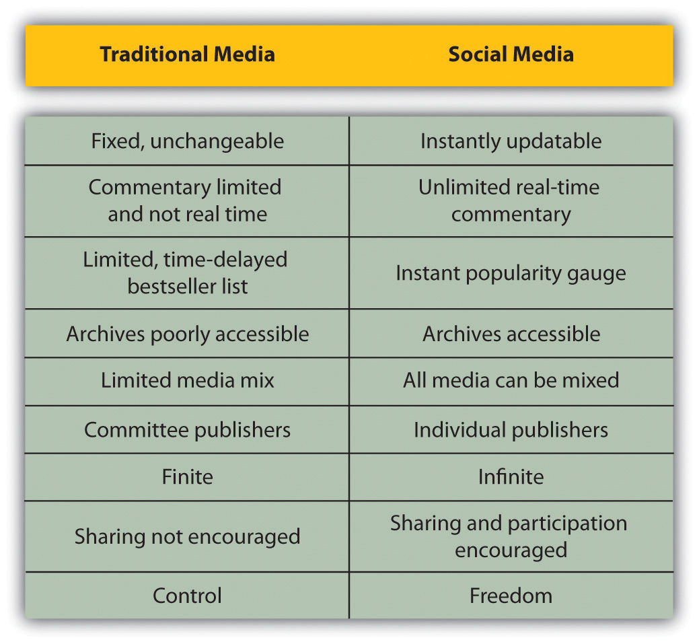

Blogs, wikis, social bookmarks, and tag clouds: these are new words for new things and new ways to use words. You may be living in the world of social media, but to many it’s a jumbled jungle with no clear structure.
The many facets of social media are also called Web 2.0, consumer-generated media (CGM), participatory media, and new media. In fact, comparing social media to traditional media is probably the most useful way of defining what exactly this means.
Most simply put, social media are media (from written to visual to audio to audiovisual) that are designed to be shared. Sharing means that it is easy to comment on, that it is easy to send, and that there are no high costs associated with viewing the media. Because of the connected nature of the Internet, it means that sharing, commenting, and viewing can all be tracked and measured.
Figure 8.1 The Differences between Traditional and Social Media
The Internet, and the software developed to run on it, has made it simple for anyone to publish and distribute content. It has also made it simple for anyone to access that content.
The realm of social media is about collaborating, generating content, sharing, and most of all, connecting.
Blogs are probably the best-known example of social media. One of the earliest online journals recorded was http://www.links.net, Justin Hall’s online diary, which he kept for eleven years from 1994.Reyhan Harmanci, “Time to Get a Life—Pioneer Blogger Justin Hall Bows Out at 31,” San Francisco Chronicle, February 5, 2005, http://www.sfgate.com/cgi-bin/article.cgi?file=/c/a/2005/02/20/MNGBKBEJO01.DTL (accessed May 27, 2008). From the very first days of the Internet, early adopters used it to create personal content.
These online diaries were referred to as “Weblogs,” for “Web” and “log,” but in April or May of 1999, Peter Merholz unwittingly coined the term “blog” by adding the following to the sidebar of his Web site peterme.com: “For What It’s Worth I’ve decided to pronounce the word ‘weblog’ as wee’-blog. Or “blog” for short.”Peter Merholz, “Play with Your Words,” peterme.com, May 17, 2002, http://www.peterme.com/archives/00000205.html (accessed May 27, 2008).
Developers began creating tools that made it easier for anyone to start a blog. Blogger, a popular blogging platform, was launched in August 1999 and acquired by Google in 2003. In 2001, Wikipedia, probably the most well-known wiki, was created. (A wiki is a simple Web site that can be edited in real time by a number of users.)
Technorati, which tracks blogs and tagged social media, was launched in 2002. As of April 2008, Technorati was tracking 112.8 million blogs and noted in 2007 that 1.4 new blogs were being created every second.
Social media are not just about blogging, though, and several platforms that made sharing other kinds of content easier have come to the fore. Flickr, the online photo-sharing tool, was launched in February 2004 and bought by Yahoo! in June 2005.
By this stage, the social media buzzwords and neologisms were being picked up by the mainstream press, and in 2004, the Merriam-Webster dictionary chose “blog” as the word of the year.
YouTube (http://www.youtube.com), the online video-sharing Web site, was previewed in May 2005 and launched six months later. It was acquired by Google in November 2006 for $1.65 billion. Twitter, which allows for users to share 140-character “tweets,” was launched in October 2006.
In 2006, Time magazine named “You” as the Person of the Year for “the growth and influence of user-generated content on the Internet.”Lev Grossman, “Time’s Person of the Year: You,” Time, December 13, 2006, http://www.time.com/time/magazine/article/0,9171,1569514,00.html (accessed June 20, 2010). In 2009, Google started including tweets in search results—something they call “real-time search”—indicating the importance of social media in terms of relevant content.